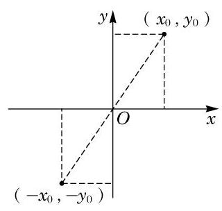
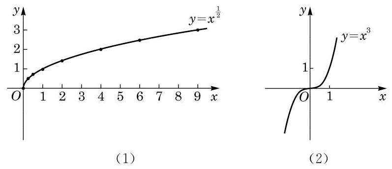
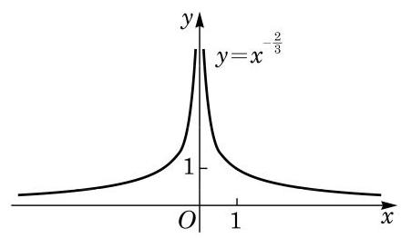
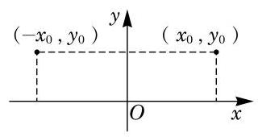
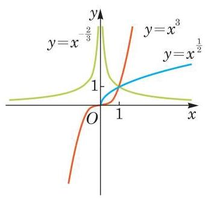
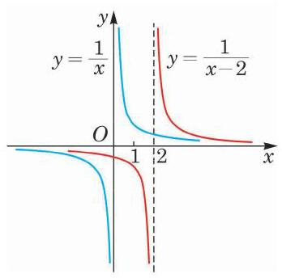
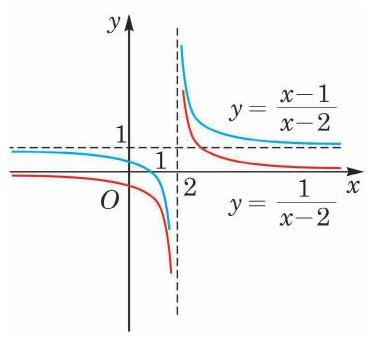

幂函数、 指数函数与对数函数
初中已经学过一些基本的初等函数, 如正比例函数、反比例函数、一次函数、二次函数等. 函数是描述客观世界中变量之间相互关系和变化规律的重要语言和工具. 例如, 一次函数可描述匀速运动，二次函数可描述匀加速运动等.
本章我们将在上一章的基础上, 通过固定等式 中的三个量 中的一个量, 研究另两个量的相互关系和变化规律, 定义三种基本而应用广泛的函数——幂函数、指数函数和对数函数. 要学会用函数图像和代数运算的方法研究这些函数的性质, 了解它们各自蕴含的规律. 同时，要通过建立数学模型，解决一些简单的实际问题，并体会这些函数在解决有关实际问题中的作用. 这些都将为下一章"函数的概念、性质及应用"的学习奠定基础.
1 幂函数的定义与图像
在初中阶段我们已经学过正比例函数如 ,反比例函数如 即 ,以及二次函数如 等函数的图像与性质.
这三个函数的共同特征都是将幂的指数 固定,底数取为变量 ,而研究幂 随 的变化而变化的规律. 用
来描述 与 之间的关系就得到了幂函数.
定义 当指数 固定,等式
例题 1
例 1 求下列函数的定义域:
(1) ;
(2) ；
(3) .
答案与解析收起 / 展开
解(1)对一切实数 该函数都有意义,所以其定义域是 .
(2) ，当 时，该函数才有意义，所以其定义域是 .
(3) ，当 时，该函数才有意义，所以其定义域是 .
幂函数的指数 .
函数图像是直观理解变量间关系的一个重要手段. 下面我们考察幂函数 的图像及性质.
在平面直角坐标系中把满足 的一切点 描绘出来,就构成幂函数 的图像. 需要注意,幂函数的图像依赖于指数 的值,可以有不同的形状.
作出函数的大致图像的步骤可以是: 列表一描点一连线.
例题 2
例 2 分别作出幂函数 及 的大致图像.
| |
| 0 | 0 |
| 0.25 | 0.5 |
| 0.5 | 0.7071 |
| 1 | 1 |
| 2 | 1.4142 |
| 4 | 2 |
| 6 | 2.4495 |
| 9 | 3 |
答案与解析收起 / 展开
解 幂函数 的定义域为所有的非负数,我们在其图像上取一些特殊的点. 由
就得到幂函数 的图像过下面的点:
再使用计算器多采集一些点, 可以粗略地作出其图像, 如图 4-1-1(1)所示.
幂函数 的定义域为所有实数. 由
就得到幂函数 的图像过下面的点:
再使用计算器多采集一些点, 可以粗略地作出其图像, 如图 4-1-1(2)所示.

图 4-1-2

图 4-1-1
因为幂函数 的定义域为一切实数,若点 在幂函数 的图像上,就有 . 而点 关于原点的对称点易知是 ,如图 4-1-2 所示. 由 ,得 ,因此点 也落在幂函数 的图像上. 这说明幂函数 的图像关于原点成中心对称.
例题 3
答案与解析收起 / 展开
解 因为 ,所以幂函数 的图像必过下面的点:
再使用计算器多采集一些点, 可以粗略作出此幂函数的图像, 如图 4-1-3 所示.

图 4-1-3
由例 1,可知幂函数 的定义域为不等于 0 的一切实数. 若点 在幂函数 的图像上,则有 . 而点 关于 轴的对称点易知是 ,如图 4-1-4 所示. 由 ,且 ,易知同时有 ,从而点 也落在幂函数 的图像上. 这说明幂函数 的图像关于 轴成轴对称.

图 4-1-4
练习4.1(1)
练习4.1(1) · 1
答案与解析收起 / 展开
- 将点 代入幂函数 ,得 ,解得 ,所以此幂函数的表达式为 .
练习4.1(1) · 2
- 求下列函数的定义域, 并作出它们的大致图像:
(1) ；
(2) ；
(3) .
答案与解析收起 / 展开
2.(1)对一切实数 ,该函数都有意义,所以其定义域是 . 图略.
(2) ,当 时,该函数才有意义,所以其定义域是 . 图略.
(3) ,对一切实数 ,该函数都有意义,所以其定义域是 . 图略.
练习4.1(1) · 3
答案与解析收起 / 展开
- 由题意,得 ,解得 . 又因为 为整数,所以 的取值为 0、1、2.
2 幂函数的性质
由前述,不管指数 取何值,当 时,幂函数 总是有定义的,且其函数值 . 这说明,幂函数 在第一象限总有图像,其图像随指数 取值的不同,可分为两种情况.
(1) 的情况. 此时观察幂函数 在第一象限的图像,不难发现,当指数 时,相应的图像类似图 4-1-5 中 的图像; 当指数 时,相应的图像类似图 4-1-5 中 的图像; 而当 时,幂函数 的图像是一条经过原点的直线.
当 时,幂函数 的图像是平行于 轴、 并在 轴上方一个单位的一条直线(除去点 (0,1)).
当 时,幂函数 的图像是经过原点的一条直线.

图 4-1-5
观察图 4-1-5 所示的幂函数 在第一象限的图像,可发现图像由左至右是上升的,也就是说,随着自变量 的不断增大,函数值 也不断增大. 这是因为当 时,若 ,则 ,从而由幂的基本不等式,得
即 . 这说明在区间 上幂函数 的函数值 随着 的 (严格) 增大而 (严格) 增大. 此时称幂函数 在区间 上是严格增函数.
(2) 的情况. 此时幂函数 在第一象限的图像类似图 4-1-5 中 的图像. 该图像由左至右是下降的,也就是说,在区间 上幂函数 的函数值 随着 的 (严格) 增大而 (严格) 减小. 此时称幂函数 在区间 上是严格减函数.
因为 ,所以无论 还是 ,幂函数的图像均经过点 .
例题 4
例 4 比较下列各题中两个数的大小:
(1) 与 ；
(2) 与 .
答案与解析收起 / 展开
解 (1) 考虑幂函数 . 由于指数小于 0 的幂函数在区间 上是严格减函数,因此 .
(2)考虑幂函数 . 由于
而指数大于 0 的幂函数在区间 上是严格增函数,因此
故
下面我们研究一些函数图像之间的关系.
例题 5
例 5 已知函数 和 ,说明这两个函数图像之间的关系, 并在同一平面直角坐标系中作出它们的大致图像.
答案与解析收起 / 展开
解 在幂函数 的图像上任取一点 ,易得点 一定在函数 的图像上,而将点 向右平移 2 个单位就与点 重合. 反之亦然. 因此,将函数 的图像向右平移 2 个单位就得到函数 的图像. 反之,将函数 的图像向左平移 2 个单位就得到函数 的图像,如图 4-1-6 所示.

图 4-1-6
例题 6
例 6 已知函数 和 ,说明这两个函数图像之间的关系, 并在同一平面直角坐标系中作出它们的大致图像.
答案与解析收起 / 展开
解 将 整理变形,得 . 若点 在函数 的图像上,则点 就一定在函数 的图像上,即将点 向上平移 1 个单位就与点 重合. 反之亦然. 因此,将函数 的图像向上平移 1 个单位就得到函数 的图像. 反之,将函数 的图像向下平移 1 个单位就得到函数 的图像,如图 4-1-7 所示.

图 4-1-7
练习4.1(2)
练习4.1(2) · 1
- ( 1 )已知函数 和 ，说明这两个函数图像之间的关系，并在同一平面直角坐标系中作出它们的大致图像;
(2)已知函数 和 ，说明这两个函数图像之间的关系，并在同一平面直角坐标系中作出它们的大致图像.
答案与解析收起 / 展开
- (1)将函数 的图像向右平移一个单位就得到函数 的图像. 将函数 的图像向左平移一个单位就得到函数 的图像. 图略.
(2)将函数 的图像向上平移一个单位就得到函数 的图像. 将函数 的图像向下平移一个单位就得到函数 的图像. 图略.
练习4.1(2) · 2
- 比较下列各题中两个数的大小:
(1) 与 ； (2) 与 .
答案与解析收起 / 展开
2.(1)考虑幂函数 . 因为指数小于 0 的幂函数在区间 上是严格减函数,所以 .
(2)考虑幂函数 . 因为指数大于 0 的幂函数在区间 上是严格增函数,所以 .
练习4.1(2) · 3
答案与解析收起 / 展开
习题 4.1
A 组
习题4.1A · 1
答案与解析收起 / 展开
- 将点 代入幂函数 ,得 ,解得 ,所以此幂函数的表达式为 .
习题4.1A · 2
- 求下列函数的定义域, 并作出它们的大致图像:
(1) ； (2) ； (3) .
答案与解析收起 / 展开
2.(1)对一切实数 ,该函数都有意义,所以其定义域是 . 图略.
(2)函数 ,当 时,该函数才有意义,所以其定义域是 . 图略.
(3)函数 ,当 时,该函数才有意义,所以其定义域是 . 图略.
习题4.1A · 3
- 在固定压力差 (压力差为常数) 的前提下,当气体通过圆形管道时,其速率 (单位: 与管道半径 (单位: ) 的四次方成正比. 若在半径为 的管道中,某气体的速率为 ,求该气体通过半径为 的管道时的速率. (结果精确到 )
答案与解析收起 / 展开
- 根据题意,设 ,将 代入该式,得 ,解得 . 此时 . 于是,当 时, .
习题4.1A · 4
- 比较下列各题中两个数的大小:
(1) 与 ； (2) 与 .
答案与解析收起 / 展开
4.(1)考虑幂函数 . 因为指数小于 0 的幂函数在区间 上是严格减函数,所以 ；
(2) .
习题4.1A · 5
- 下列幂函数在区间 上是严格增函数,且图像关于原点成中心对称的是 ___(请填入全部正确的序号).
① ； ② ； ③ ； ④ .
答案与解析收起 / 展开
习题4.1A · 6
答案与解析收起 / 展开
B 组
习题4.1B · 1
- 填空题:
(1)幂函数 ( 为正整数)的图像一定经过___象限.
(2)若幂函数 在 时的图像位于直线 的上方,则 的取值范围是___.
答案与解析收起 / 展开
习题4.1B · 2
- 下列命题中, 正确的是 ( )
A. 当 时,函数 的图像是一条直线;
B. 幂函数 的图像都经过 和 两个点;
C. 若幂函数 的图像关于原点成中心对称,则 在区间 上是严格增函数;
D. 幂函数的图像不可能在第四象限.
答案与解析收起 / 展开
习题4.1B · 3
- 写出一个图像经过第一、第二象限但不经过原点的幂函数的表达式.
答案与解析收起 / 展开
习题4.1B · 4
- 已知函数 (常数 ). 问: 是否存在整数 ,使该函数在区间 上是严格减函数，并且函数值不恒为负？若存在，求出所有符合条件的 ；若不存在，请说明理由.
答案与解析收起 / 展开
- 将函数 整理变形,得 . 要求该函数在区间 上是严格减函数,并且函数值不恒为负,所以 ,且当 时,函数值 . 因此, . 又因为 为整数,所以 或 -1 .